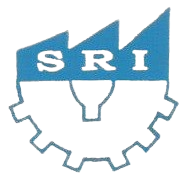

Steel & Metal Manufacturing
High-strength materials engineered for durability, consistency, and industrial performance.


Sri Radhai IndustriesExpert precision machining to elevate your manufacturing. Let's take your business further.
About Sri Radhai Industries
Sri Radhai Industries is a customer-focused precision engineering and CNC machining company delivering dependable manufacturing support for industrial clients. From drawing review to final dispatch, we ensure disciplined execution, responsive communication, and consistent delivery performance.


Quality systems, process discipline, and customer commitment define our approach. With capable machines, skilled operators, and stage-wise inspections, we deliver components that meet customer drawings and production expectations.
We focus on practical manufacturing solutions that reduce delays and improve consistency. Our workflow is built for repeatability, measurable quality, and dependable delivery across every order.
Meet our TeamExperienced team with strong process and production understanding.
Well-maintained machining setup for stable and efficient output.
Stage-wise inspection to maintain dimensional and process quality.
Planned production and dispatch aligned with customer timelines.
Precision manufacturing support built around fabrication, scalable supply, and dependable inspection standards.
High-strength materials engineered for durability, consistency, and industrial performance.

Tailored fabrication solutions developed around project-specific drawings and production needs.
Scalable production capacity with stable process control and dependable quality output.


Strict inspection practices that support drawing conformity and customer quality expectations.
Core Expertise

01 • Process Engineering
Review of drawings, specifications, and material requirements to plan accurate machining processes.

02 • Production Capability
Precision machining using modern VMC and CNC machines for consistent quality and repeatability.

03 • Quality & Dispatch
Components inspected as per drawings and delivered on time with clear communication.
CNC Machining Support
We support customers with disciplined CNC and VMC machining processes, practical production planning, and inspection-driven execution that helps maintain quality and delivery confidence.

We provide precision VMC machining and CNC job work solutions that support OEMs and engineering industries with accuracy, reliability, and on-time delivery.
Learn moreHigh-precision VMC job work for components requiring tight tolerances and excellent surface finish.
CNC machining solutions from prototype to production, aligned to customer drawings and specifications.
Client Testimonials
Consistent quality, reliable delivery, and practical technical support are the reasons customers continue to work with Sri Radhai Industries.